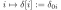
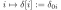
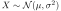
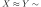
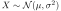
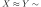
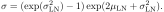
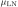
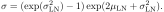
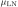

Next: Blog posts 2023 Up: Blog posts 2026 Previous: Blog posts 2026 Contents
The clear trend is that artificial intelligence (AI) and machine learning (ML) are current hot topics, particularly in wireless networks and signal processing. Another active research topic is stochastic geometry (SG). In this regard, some perceive SG and ML as competitors, suggesting ML has surpassed SG in practical impact. However, this kind of contraption is a poor perspective, and without saying, not the only way to look at it. The truth is that ongoing SG research remains valuable, not only as an academic exercise, but also beyond its academic context. In practice, SG can and will be utilized in modern ML by providing hypothesis classes for the ML algorithms. In this post, I will provide a concrete example of how.
For instance, SG models can be integrated as a hypothesis class in the learning process of ML.— Yassine H Mamouche et al., [1].
Let me formulate the working definitions of the ML and SG. We focus on the signal processing of wireless networks, particularly interference modeling.
The landscape of the ML algorithms is vast; however, they are often based on Gaussian process regression (GPR). The GPR is a signal prediction method that relies on estimating the signal using a set of samples (or observations) and a correlation function. More specifically, an autocovariance function (also referred to as a kernel) is at the heart of the GPR. Such an autocovariance function can be arbitrary, and one should carefully choose an appropriate one to gain meaningful results. One way is to numerically estimate the autocovariance from training data. Whether the training data is empirical data from an actual system or generated synthetically by using simulation tools, the numerical statistical estimates lack generality and physical insight, and have a concomitant dependence on local, empirical data and circumstances. Where to even start interpreting such data, if we don't have a rigid understanding of what qualities we are looking for? It is time for the SG to step into the arena: A comprehensive, tractable, and solid wireless network SG system model provides hypothesis classes that guide us effectively in inferring patterns from empirical ML signal data.
In the following, we demonstrate a simple example of estimating the power of a non-stationary Gaussian interference signal at a low Earth orbit (LEO) satellite receiver. The prior autocovariance function is derived from a theoretical estimate based on SG. Based on this autocovariance, the power estimation is inferred from empirical data using GPR. Furthermore, the estimation is compared to a moving average (MA) estimation.
The theoretical settings are:
 kHz are distributed according to the Poisson point process
(PPP) on the Earth surface, causing interference at the LEO satellite.
kHz are distributed according to the Poisson point process
(PPP) on the Earth surface, causing interference at the LEO satellite.
 rad steered towards the Earth center.
rad steered towards the Earth center.
 km/s.
km/s.

 is a zero-mean Gaussian waveform with
is a zero-mean Gaussian waveform with
 , which is modulated by the power
, which is modulated by the power  .
.
 ) is approximately gamma distributed
with the mean
) is approximately gamma distributed
with the mean
 and the variance
var
and the variance
var (see thesis, Theorems 3.3.6 and 3.3.7).
(see thesis, Theorems 3.3.6 and 3.3.7).
 at lag
at lag  has the Gaussian form
has the Gaussian form

 are constant parameters that depend on the dB width of the antenna gain
are constant parameters that depend on the dB width of the antenna gain
 , interference source power
, interference source power  , the elevation angle , the altitude of the LEO satellite
, the elevation angle , the altitude of the LEO satellite  , the orbital speed
, and the density of the Earth signal sources .
, the orbital speed
, and the density of the Earth signal sources .
In our settings, since the antenna is directed to the Earth center,
 rad. Further, for a normalized
rad. Further, for a normalized
 ( can be scaled accordingly) and for our satellite settings 2-3,  and
.
( can be scaled accordingly) and for our satellite settings 2-3,  and
.
of the satellite: the orbital speed
follows single-handedly from the orbital altitude. It can be empirically verified that within a fairly general density region, the assertion of  is more crucial for the GPR estimation than
is more crucial for the GPR estimation than  (especially in the non-causal prediction): too large and too small yield overfitting
and underfitting the data, respectively. In a refined version of the GPR, and could also be treated as hyperparameters, which are learned from the data, but we treat them as fixed.
(especially in the non-causal prediction): too large and too small yield overfitting
and underfitting the data, respectively. In a refined version of the GPR, and could also be treated as hyperparameters, which are learned from the data, but we treat them as fixed.
The prior model we will utilize in the GPR is the properties 5-7. The described signal power with the Gaussian autocovariance is the hypothesis class of the set of functions within which we search our estimation from, and the waveform  is treated as a non-stationary Gaussian process. In practice, we will use the samples from
is treated as a non-stationary Gaussian process. In practice, we will use the samples from  to estimate the interference power . Each such sample
to estimate the interference power . Each such sample  is interpreted as noisy measurements of :
is interpreted as noisy measurements of :
 , where
, where
 is set to correspond to the expected variance of .
is set to correspond to the expected variance of .
For a random realization of the power (generated according to the gamma distribution and its second-order statistics), which is “not known” prior to the empirical samples, in Figures 1 (a) and 1 (b), we estimate from a sampled ( kHz) realization of the interference waveform by using GPR and non-causal
MA. The window size of the MA is empirically optimized, but it could also be learned from training data. Apart from the slight overfitting, the MA captures reasonably well (as long as the window size is optimized). However, the GPR prediction is clearly better in capturing the smoothness of . Furthermore, the GPR prediction captures the from
kHz) realization of the interference waveform by using GPR and non-causal
MA. The window size of the MA is empirically optimized, but it could also be learned from training data. Apart from the slight overfitting, the MA captures reasonably well (as long as the window size is optimized). However, the GPR prediction is clearly better in capturing the smoothness of . Furthermore, the GPR prediction captures the from  onward, which is impossible for the non-causal, centralized MA, which starts at
s. The forecast
region in the figure corresponds to a causal estimation of the future signal based on the past values. Not so surprisingly, the GPR is superior to MA in this regard. Both predictions can be improved by increasing the sampling frequency.
onward, which is impossible for the non-causal, centralized MA, which starts at
s. The forecast
region in the figure corresponds to a causal estimation of the future signal based on the past values. Not so surprisingly, the GPR is superior to MA in this regard. Both predictions can be improved by increasing the sampling frequency.
Figure 1 (a) speaks its own language for the benefit of the prior SG-based hypothesis class versus the simple MA. On the contrary, without any hypothesis classes at hand, signal estimation would be much more difficult and arbitrary: even if the Gaussian correlation function is a commonly used initial guess for the autocovariance, and could be guessed without the SG analysis, the insight into the hyperparameters and their dependency on the orbital and network properties is invaluable.
This was a simple, however theoretically solidly grounded, example of how SG analysis of wireless networks can assist in producing prior knowledge for the ML algorithms. A similar inquiry extends to signals affected by fading and other signal attenuation in LEO networks. Of course, terrestrial network settings are also feasible as hypothesis classes (having their distinct characteristics). The potential applications include interference cancellation, error correction, and medium access control.
The following Python code generates the plots. (Written with the help of ChatGPT.)
import numpy as np
import matplotlib.pyplot as plt
from scipy.stats import norm, gamma
from scipy.linalg import cholesky
from numpy.linalg import solve
# === Parameters ===
T_total = 15.0 # simulate P(t), I(t) on [0, 15] s
T_obs = 10.0 # we only "observe" up to 10 s
dt = 0.001 # fine time step for continuous path (1000 Hz)
t = np.arange(0, T_total, dt)
N = len(t)
fs_sample = 100.0 # sampling of |I|^2 (0.1 kHz)
sample_interval = 1.0 / fs_sample # 0.1 s
# indices of sampled points up to T_obs
indices = np.arange(0, int(T_obs / dt), int(sample_interval / dt))
t_sampled = t[indices]
# Gamma marginal for P(t): mean=1, var=1/2 -> Gamma(k=2, theta=0.5)
k_shape = 2.0
theta_scale = 0.5
mean_P = 1.0
# === 1. Construct latent Gaussian process for P(t) with covariance C(τ) = 0.5 * exp(-3 τ^2) ===
tau_full = t[:, None] - t[None, :]
k_emp = 0.5
D_emp = 0.1352
C_full = k_emp * np.exp(-D_emp * tau_full**2)
# numerical jitter for Cholesky
jitter = 1e-10
C_full += jitter * np.eye(N)
L = cholesky(C_full, lower=True)
# latent Gaussian process
z_latent = L @ np.random.randn(N)
# Gaussian copula to get Gamma process P(t)
u = norm.cdf(z_latent)
P = gamma.ppf(u, a=k_shape, scale=theta_scale)
# === 2. Generate I(t) = X(t)*sqrt(P(t)) ===
X = np.random.randn(N)
I = X * np.sqrt(P)
# === 3. Sample I and form |I|^2 on [0, T_obs] at 0.1 kHz ===
I_sampled = I[indices]
power_sampled = np.abs(I_sampled)**2 # z_i = |I(t_i)|^2
# === 4. 300-sample moving average on sampled powers (0..T_obs) ===
window_size = 300
kernel = np.ones(window_size) / window_size
power_ma = np.convolve(power_sampled, kernel, mode='valid')
# time axis for centered MA
if window_size > 1:
t_ma = t_sampled[(window_size-1)//2 : -(window_size//2)]
else:
t_ma = t_sampled
# Simple MA "forecast": extend last MA value flat from last t_ma to T_total
t_ma_forecast = np.arange(t_ma[-1], T_total + 1e-9, sample_interval) # 0.1 kHz grid to end
power_ma_forecast = np.full_like(t_ma_forecast, power_ma[-1])
# Approximate noise variance for |I|^2
# Var(|I|^2 | P=p) = 2 p^2, E[P^2]=1.5 => average Var ≈ 3
noise_var = 3.0
# Variance of 300-sample MA under iid noise with var=noise_var
ma_var = noise_var / window_size
ma_std = np.sqrt(ma_var)
# === 5. GPR prediction of P(t) on [0, 15] from noisy power samples on [0, 10] ===
# GP prior: P ~ GP(mean=mean_P, cov(t,s) = 0.5*exp(-3(t-s)^2))
# Observations: z_i = |I(t_i)|^2 ≈ P(t_i) + N(0, noise_var)
# training times (sampled up to T_obs)
t_train = t_sampled
z_train = power_sampled
# Covariance among training points
tau_ss = t_train[:, None] - t_train[None, :]
k_prior = 0.5
D_prior = 0.1352
C_ss = k_prior * np.exp(-D_prior * tau_ss**2 )
# Covariance between all times (0..T_total) and training points
tau_fs = t[:, None] - t_train[None, :]
C_fs = k_prior * np.exp(-D_prior * tau_fs**2 )
# Add observation noise to training covariance
C_ss_noisy = C_ss + noise_var * np.eye(len(t_train))
# Posterior mean: m_post(t) = mean_P + C_fs * K^{-1} * (z - mean_P)
z_centered = z_train - mean_P
alpha = solve(C_ss_noisy, z_centered)
P_gp_mean = mean_P + C_fs @ alpha
# Posterior variance: diag(C_ff - C_fs K^{-1} C_sf)
C_ff_diag = np.full(N, 0.5) # since C_ff(t,t) = 0.5 for all t
V = solve(C_ss_noisy, C_fs.T) # shape: (n_train, N)
C_fs_V = np.sum(C_fs * V.T, axis=1)
P_gp_var = C_ff_diag - C_fs_V
P_gp_std = np.sqrt(np.maximum(P_gp_var, 0.0))
# === 6. Plot ===
fig, (ax1, ax2) = plt.subplots(2, 1, figsize=(10, 6), sharex=True)
# ---------- Subplot (a): P(t), GPR forecast, MA forecast ----------
# True P(t) over [0, 15]
ax1.plot(t, P, label='True signal power P(t)', color='C0', alpha=0.7)
# GPR mean and ±2σ over [0, 15]
ax1.plot(t, P_gp_mean, label='GPR prediction of P(t)', color='C1', linewidth=2)
# ax1.fill_between(t,
# P_gp_mean - 2*P_gp_std,
# P_gp_mean + 2*P_gp_std,
# color='C1', alpha=0.2, label='GPR ±2σ')
# 300-sample MA on [0, T_obs]
ax1.plot(t_ma, power_ma, 'r-', label='MA of |I|² (0–10 s)')
# ax1.fill_between(t_ma,
# power_ma - 2*ma_std,
# power_ma + 2*ma_std,
# color='r', alpha=0.15, label='MA ±2σ (approx, 0–10 s)')
# Flat MA forecast beyond last MA point
ax1.plot(t_ma_forecast, power_ma_forecast, 'r--', label='MA forecast (flat)')
# Raw power samples (0–10 s)
# ax1.plot(t_sampled, power_sampled, 'kx', label='Samples |I(t)|² (0.1 kHz)', markersize=6)
# Mark observation horizon
ax1.axvline(T_obs, color='k', linestyle=':', alpha=0.5)
ax1.text(T_obs+0.05, ax1.get_ylim()[1]*0.9, 'Forecast region', fontsize=12)
ax1.set_ylabel('Signal power', fontsize=12)
ax1.set_title('Fig 1(a): True P(t), GPR estimate & forecast, and 300-sample MA & forecast', fontsize=12)
ax1.grid(True)
ax1.legend(fontsize=12)
# ---------- Subplot (b): I(t) and samples ----------
ax2.plot(t, I, label='I(t) = X(t)√P(t)', color='tab:orange')
ax2.plot(t_sampled, I_sampled, 'ko', label='Samples of I(t) (0–10 s, 0.1 kHz)', markersize=1)
ax2.axvline(T_obs, color='k', linestyle=':', alpha=0.5)
ax2.set_xlabel('t [s]')
ax2.set_ylabel('Amplitude', fontsize=12)
ax2.set_title('Fig 1(b): Non-stationary Gaussian noise I(t) with sampled observations', fontsize=12)
ax2.grid(True)
ax2.legend(fontsize=12)
plt.tight_layout()
plt.show()
References:
| [1] | Y. Hmamouche, M. Benjillali, S. Saoudi, H. Yanikomeroglu and M. D. Renzo, "New Trends in Stochastic Geometry for Wireless Networks: A Tutorial and Survey," in Proceedings of the IEEE, vol. 109, no. 7, pp. 1200-1252, July 2021, doi: 10.1109/JPROC.2021.3061778 |
| [2] | Angervuori, Ilari., Narrow-Beam Low Earth Orbit Communications and Stochastic Geometry: Non-Temporal and Temporal Interference Analysis, Thesis Draft; Aalto University |
| [3] | Oksanen, Maiju., Stokastinen geometria langattoman
tietoliikenteen analyysissä, opinnäytetyö; aalto-yliopisto.
|